Setelah menginstall Debian, kita perlu memahami beberapa perintah dasarnya, sehingga akan memudahkan kita dalam menggunakan Debian kedepannya.
berikut beberapa perintah dasar yang terdapat pada debian 12
1. Pwd
Fungsi pwd adalah untuk mengetahui direktori apa yang sedang kita buka
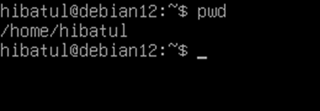
2. Mkdir
Mkdir adalah perintah untuk membuat sebuah direktori baru
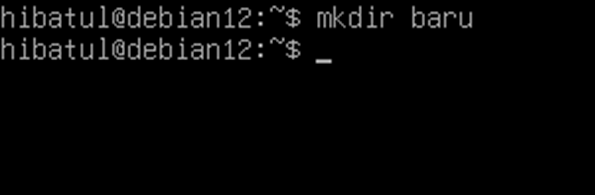
3. Ls
Perintah ls adalah untuk mengetahui daftar file dalam direktori
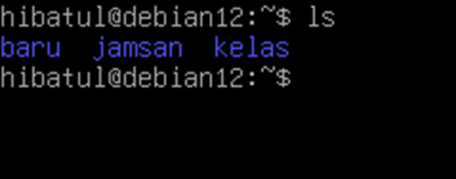
4. Cd
Cd adalah perintah untuk membuka direktori yang ada di perangkat
Catatan: gunakan: cd .. untuk kembali ke direktori sebelumnya
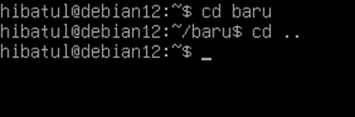
5. Rmdir
Rmdir adalah perintah untuk menghapus direktori kosong
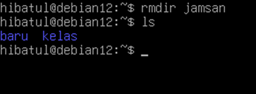
6. Rm
Rm adalah perintah untuk menghapus file yang ada di direktori
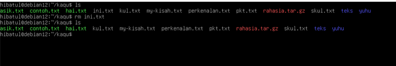
7. Touch
Perintah yang digunakan untuk membuat file baru adalah touch. Perlu diingat dalam perintah ini kita hanya membuat file kosong saja. Cara agar file tersebut memiliki isi adalah dengan menggunakan perintah echo
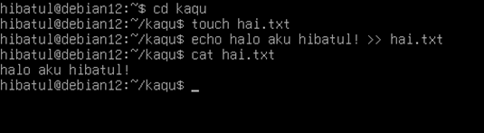
8. Echo
Echo merupakan perintah untuk menambahkan data di sebuah file. Saya akan mencontohkan menambah data dari file kosong
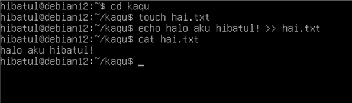
9. Cat
Perintah cat memiliki banyak sekali kegunaan. Sebagai contoh saya akan membuat sebuah file (memiliki isi) dan menampilkannya
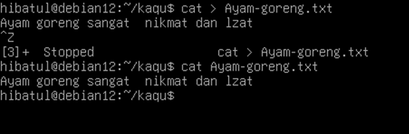
10. Mv
Perintah ini digunakan untuk memindahkan sebuah file ke direktori lain
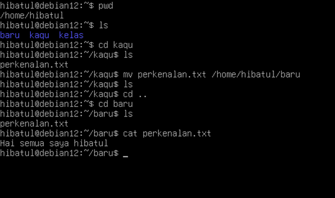
11. Cp
Cp adalah perintah yang digunakan untuk menyalin dan menempelkan file ke direktori tujuan
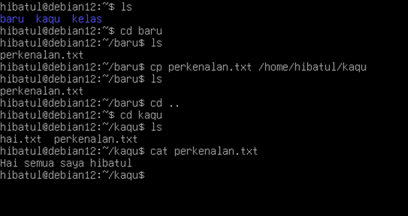
12. Find
Perintah ini berfungsi untuk mencari file dalam keseluruhan direktori
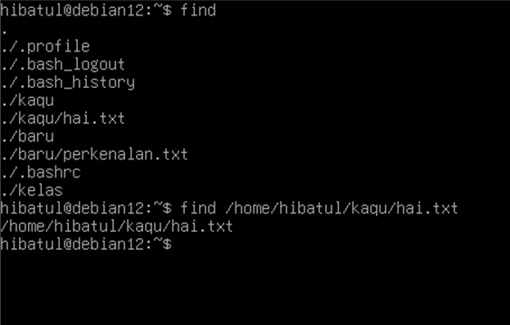
13. Ping
Ping berfungsi untuk mengecek apakah jaringan atau server bisa dijangkau dengan memeriksa kecepatan koneksi
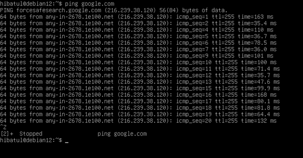
14. Tar
Tar merupakan perintah untuk mengompres file beserta direktorinya. Sebagai contoh saya akan mengompres file dan mengekstraknya.
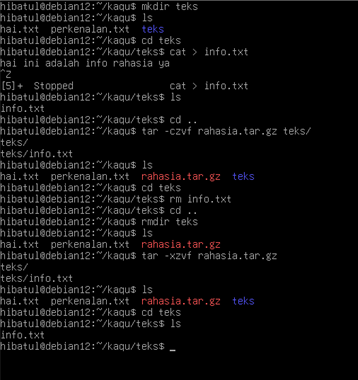
15. Hostname
Perintah ini digunakan untuk mengecek nama alamat domain yang sedang digunakan
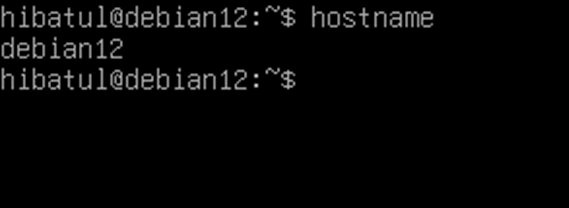
16. Su dan Exit
Selain user, kita juga bisa login sebagai super user. Super user memiliki banyak sekali keunggulan yang tidak dimiliki oleh user
Catatan: gunakan exit untuk keluar dari mode super user
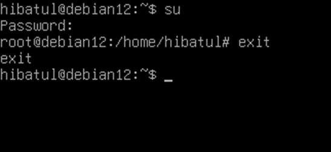
17. Adduser
Adduser adalah perintah untuk menambahkan pengguna baru di perangkat. Sebagai contoh saya akan membuat user baru dengan nama patehkt
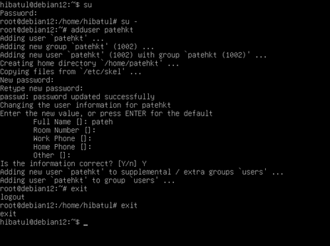
18. Chown
Perintah ini digunakan untuk memindah kepemilikan file. Sebagai contoh di sini saya ingin memindahkan kepemilikan love.txt ke user yang baru saja saya buat, yaitu patehkt
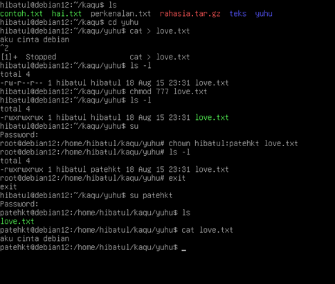
19. Chmod
Setelahnya saya juga ingin mengubah izin akses dari file love.txt tersebut, saya menggunakan chmod
20. Uname
Perintah ini akan menampilkan semua informasi terkait dengan perangkat lunak yang dipakai
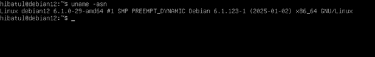
21. History
Perintah ini akan menunjukkan apa saja perintah yang sudah kita berikan
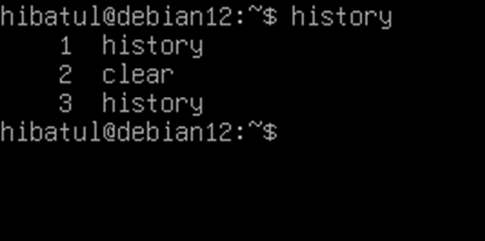
22. Head
Perintah ini akan menampilkan 10 baris pertama dari sebuah file
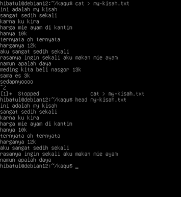
23. Df
Perintah ini digunakan untuk mengetahui besaran memori yang sudah digunakan ataupun yang tersedia
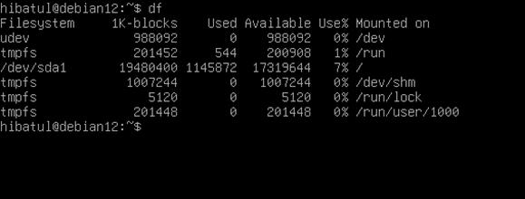
24. Diff
Diff adalah perintah yang digunakan untuk membandingkan satu file dengan lainnya
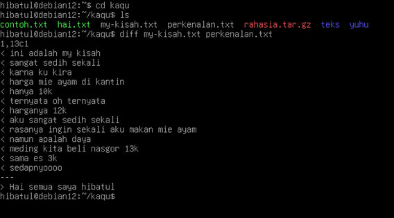
25. Du
Perintah ini digunakan untuk mengetahui kapasitas dari suatu folder
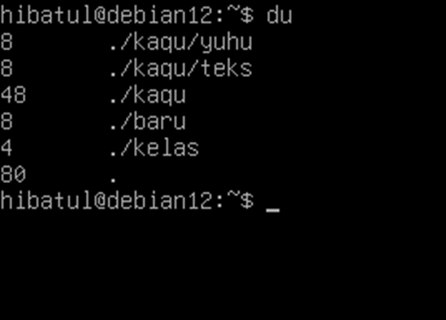
26. Grep
Grep merupakan perintah untuk mengambil data dari suatu file. Sebagai contoh, saya akan mengambil semua baris yang memiliki kata "mie"
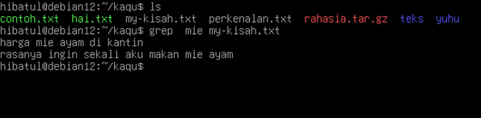
27. Jobs
Perintah ini digunakan untuk menampilkan proses yang sedang berjalan di perangkat lunak
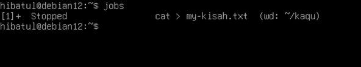
28. Date
Perintah ini digunakan untuk menampilkan tanggal saat ini
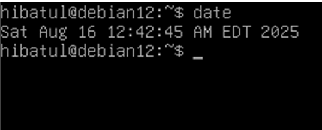
29. Nano
Data dari file yang kita buat dapat kita ubah dengan menggunakan perintah nano
Catatan: perintah ini berisi beberapa tahapan
• tulis nano [file yang ingin diubah]
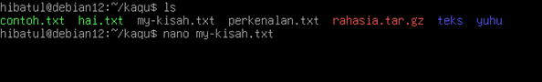
• Setelah kita mengklik tombol enter kita akan masuk ke mode edit
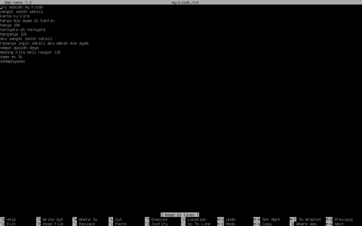
• Setelahnya ubah data file sesuai keinginan
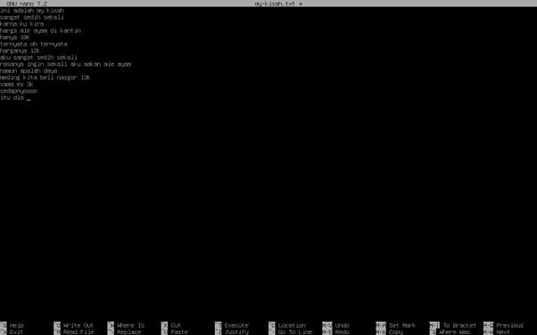
• Apabila sudah mengubah data, gunakan tombol crtl + x untuk keluar dan klik enter. Selesai, data sudah berhasil kita ubah
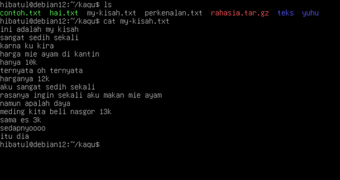
30. Top
Top merupakan perintah yang digunakan untuk mengetahui program yang sedang berjalan
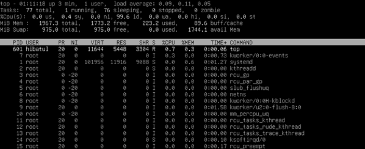
31. Awk
Perintah ini memungkinkan pengguna menuliskan sebuah program yang kemudian akan dieksekusi oleh perangkat
• awk dengan fungsi print
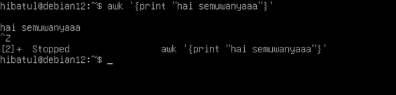
• Awk dengan fungsi print kata pertama dari file my-kisah.txt
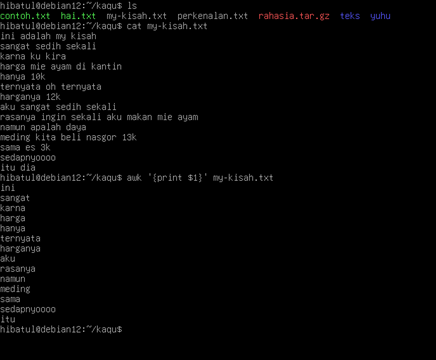
32. Sed
Perintah ini berfungsi untuk mencari hingga menyisipkan data ke file. Sebagai contoh saya akan mengganti kata “mie” menjadi “nasi” di file my-kisah.txt
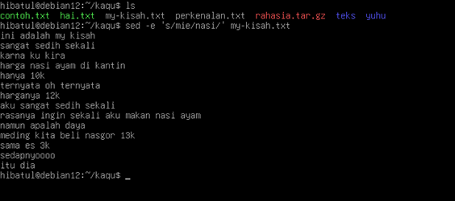
33. Sort
Perintah ini akan mengurutkan data yang ada di dalam file
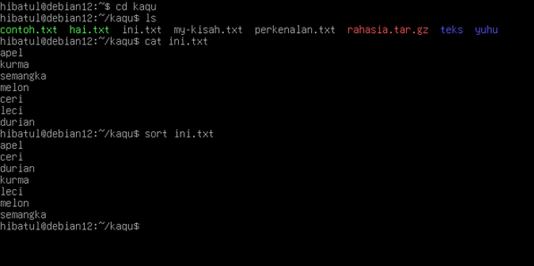
34. Cut
Cut berfungsi untuk mengambil bagian dari suatu file. Sebagai contoh saya ingin mengambil empat huruf pertama dari setiap baris di file ini.txt
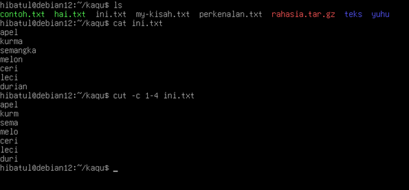
35. Ps
Perintah ini akan menampilkan snapshot dari semua proses yang berjalan di perangkat lunak
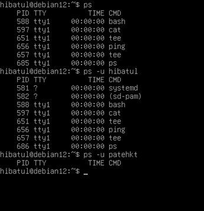
36. Time
Time adalah perintah yang digunakan untuk mengetahui berapa waktu yang dibutuhkan untuk mengeksekusi program. Sebagai contoh di sini
saya ingin membuka direktori kaqu, membuat file bernama asik.txt, memberikan izin seluruh pengguna untuk dapat mengedit, menulis, dan mengeksekusi file serta saya ingin mengecek izin seluruh file di direktori
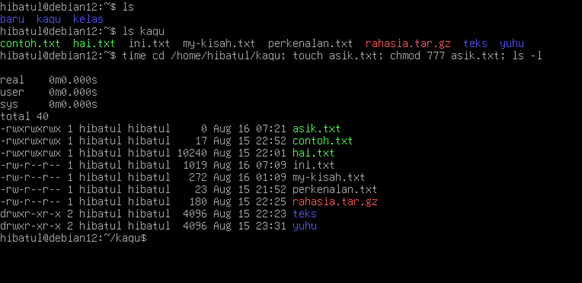
37. Systemctl Perintah
ini berfungsi untuk menampilkan seluruh layanan yang terinstal di perangkat
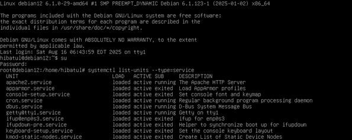
38. Watch
Perintah ini berfungsi untuk menjalankan perintah secara berulang dalam kurun waktu tertentu
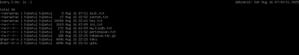
39. Ip
Perintah ini dapat digunakan untuk mengecek
alamat ip perangkat kita
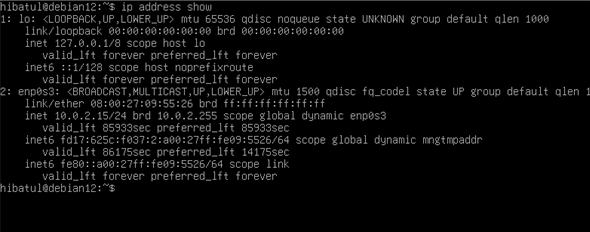
40. Ln
Ln merupakan perintah yang akan menghubungkan satu file dengan lainnya. Apabila terjadi perubahan pada salah satu file tersebut maka yang lain akan berubah juga
• Proses menghubungkan kedua file
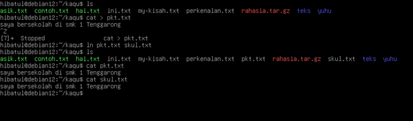
• Mengubah salah satu file
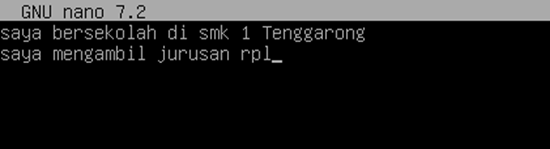
• Mengecek apakah file yang sudah terhubung mengalami perubahan
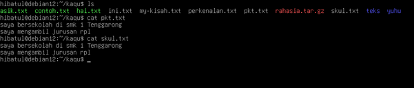
41. Alias
Perintah ini digunakan untuk mengganti suatu perintah dengan kata yang kita inginkan. Sebagai contoh saya ingin mengubah perintah cd
menjadi yes
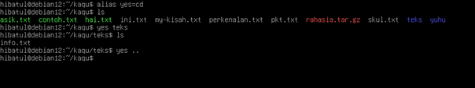
42. Unalias Untuk menghapus alias yang sudah kita buat, kita dapat menggunakan perintah unalias
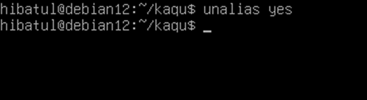
43. Tail Perintah ini berfungsi untuk menampilkan sepuluh baris terakhir dari sebuah file
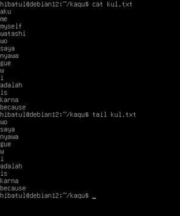
44. Vi
Perintah ini mirip dengan nano, tetapi lebih kompleks. Fungsi utama dari perintah ini adalah untuk mengubah data file
• Menuliskan perintah dan alamat file
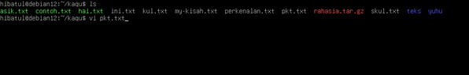
• Proses mengubah data file
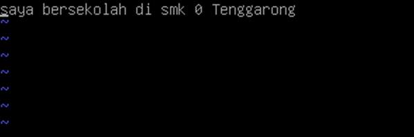
• Hasil
45. Shutdown
Perintah ini digunakan saat kita sudah berada dalam mode super user. Fungsi utama perintah ini adalah untuk mematikan perangkat lunak
46. Type
Perintah ini berfungsi untuk mengecek sebuah perintah apakah merupakan bagian dari library ataukah memang perintah shell bawaan
47. Apt
Fungsi dari perintah ini adalah untuk mengelola library kita
48. Logout
Fungsi perintah ini adalah untuk keluar dari mode user
49. Help
Perintah ini dapat kita gunakan untuk mengetahui seluruh perintah yang ada pada perangkat